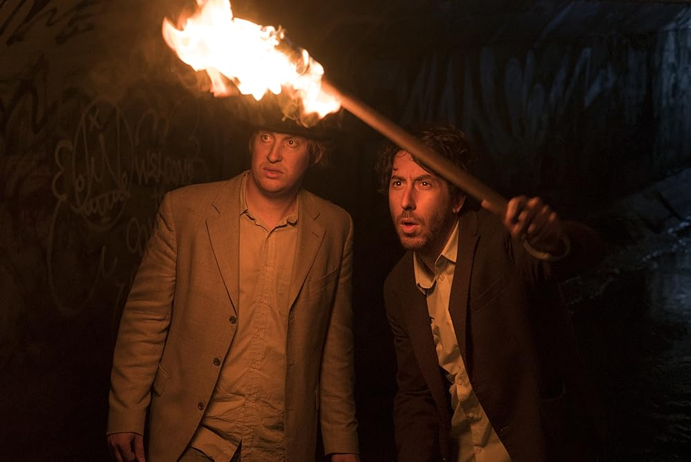
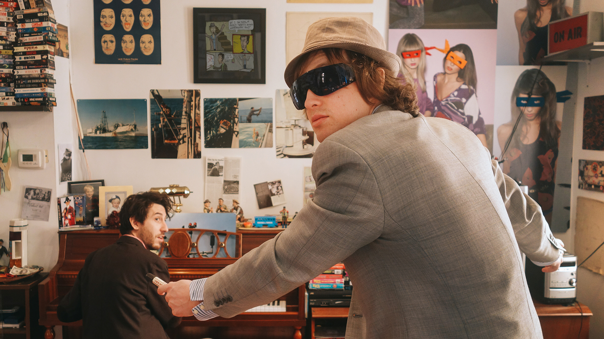
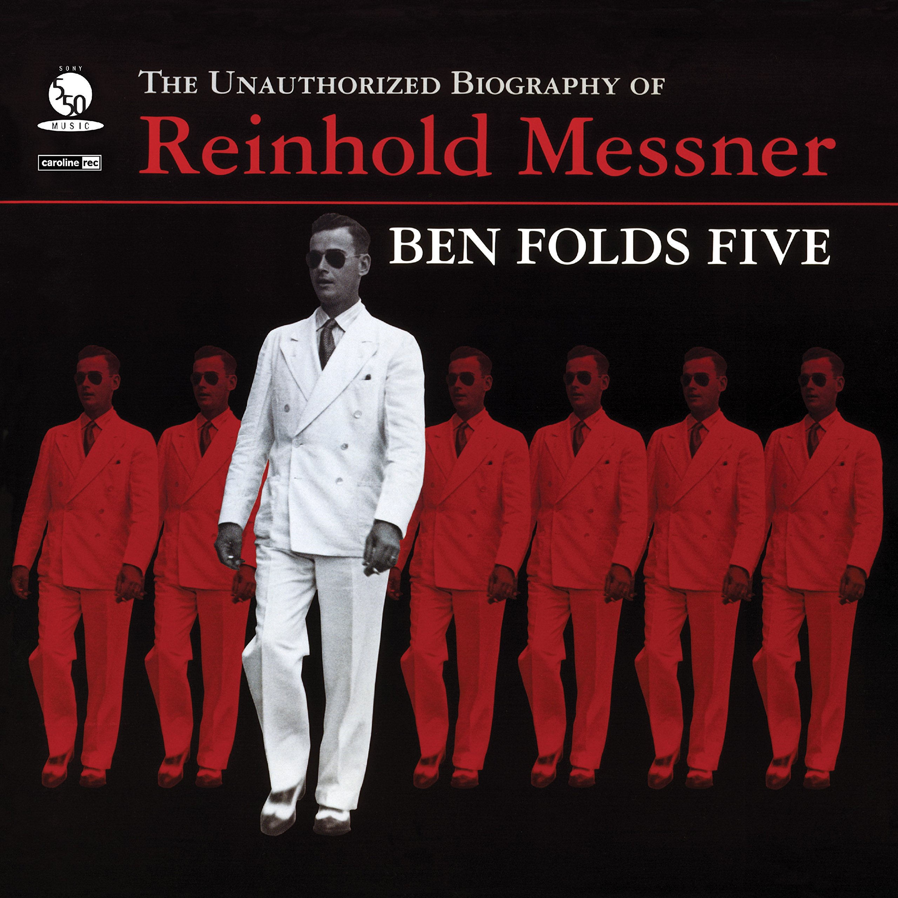
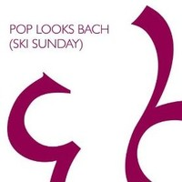
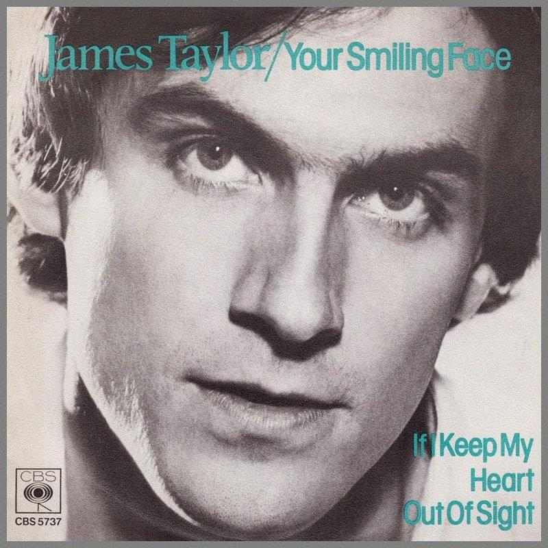
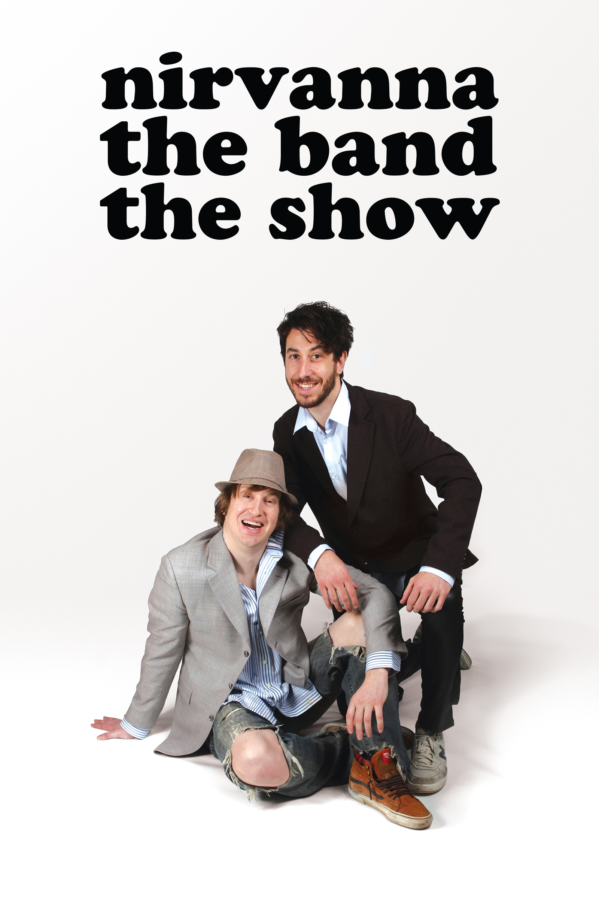
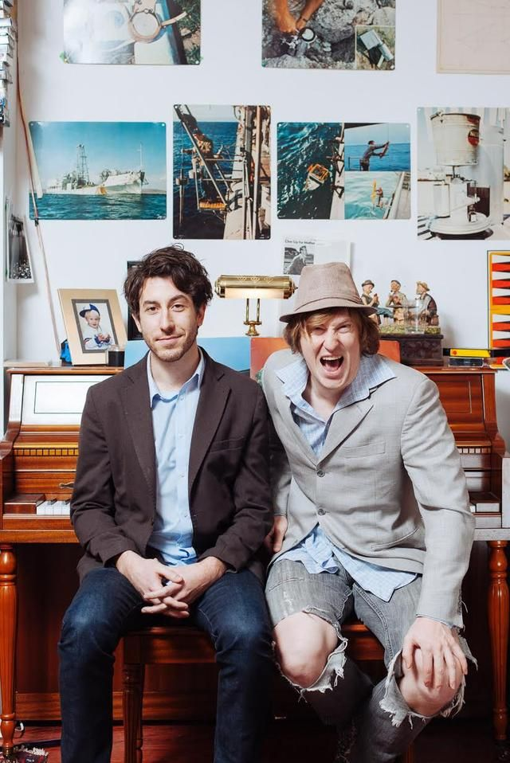
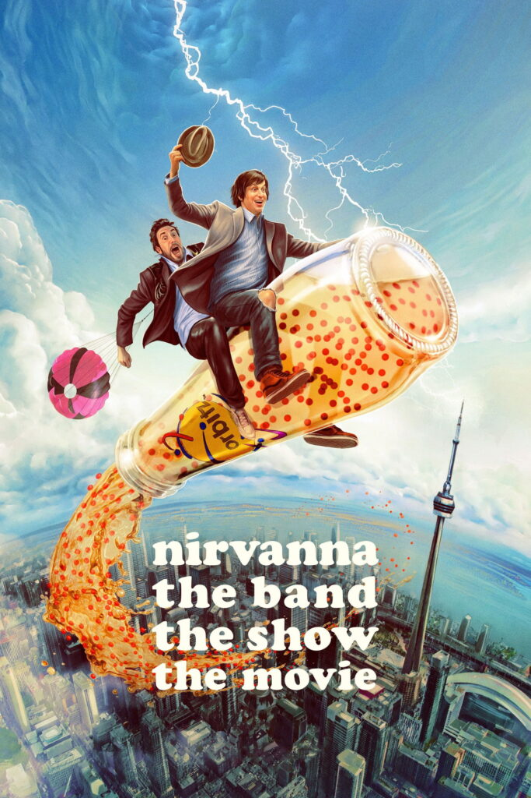
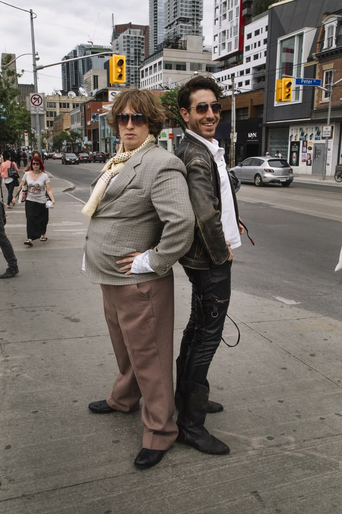

¿Qué es Nirvanna The Band The Show?
Nirvanna The Band The Show es una serie de comedia canadiense creada por Matt Johnson y Jay McCarrol. Sigue a dos amigos que llevan años intentando conseguir un show en el famoso Rivoli de Toronto, pero siempre terminan enredados en situaciones absurdas y caóticas.
La serie se distingue por su estilo documental falso (mockumentary), mezcla de ficción y realidad, y un humor irreverente que la convirtió en un fenómeno de culto.
Ver tráiler ↗Capítulos mejor rateados (según SeriesGraph)

T2, E7: The Banned List
Matt y Jay se infiltran en el sistema de túneles subterráneos de Toronto con la esperanza de entrar al Rivoli.
T1, E8: The Bank
Matt y Jay se ven envueltos en un robo a un banco y Matt cree que encontrar la manera de ser contratados en el Rivoli.

T1, E4: The Blindside
Matt y Jay asisten a la Premiere de "Star Wars: El despertar de la Fuerza", pero Matt se queda ciego justo en el día del estreno.
Canciones principales de la serie

Army
Ben Folds Five, 1999

Smells Like Teen Spirit
Nirvana, 1991

Pop Looks Bach
Sam Fonteyn, 2001

Your Smiling Face
James Taylor, 1970
Galería



